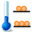

The Spin State panel provides representations for three physical models of a spin ensemble, the vector model, density matrix, and product operators. On the right hand side the parameters that control the behaviour of the spin ensemble can be set up. 7 buttons at the bottom of the window allow to manipulate the spin state using pulses, free evolution, and gradients.
Vector Representation
The spin ensemble is given as a geometrical representation in the form of vectors in a cartesian
coordinate system. Not all spin states are visible in this mode. This limitation is deliberate in order
to show this model's failure to explain coherence transfer.
If both spin types are present the vector diagram shows the two possible spin types side by side in
separate graphs. I spins are drawn in red, while S spins are blue. The magnitude of the respective vectors
reflect the gyromagnetic ratios of the spins, but not the isotope's
natural abundance. Vectors that belong to the spin highlighted in the Spin Network Editor are displayed in
a lighter colour. Three display modes are available from the settings panel: "x,y,z" shows a 3D plot in a
unit sphere with the vertical z-axis representing the direction of the external magnetic field.
"x,y-Plane" only shows the x and y axes that contain observable
coherences. "Grapefruit" also displays a 3D coordinate system and additionally shows spin trajectories
of applied pulses and during animated precession and spectrum acquisition.
Density Matrix
Below the vector model the density matrix is shown, which is the direct representation of the spin state modelled by Insensitive. The displayed density matrix is normalised so that the product operator's amplitude in equilibrium is 1 for 1H nuclei. The observable single quantum coherences, which give rise to signals in the spectrum, can be colour-coded by activating "Color 1st order coherences" in the settings panel.
Product Operators
Below the matrix the spin state is displayed as a linear combination of product operators. These can be displayed in a cartesian base, which is easily translated into a geometric representation, and in a spherical tensor basis, which is useful to determine the coherence order.
Actions on the spin state
Manipulation of the spin state can be performed using the nine buttons at the bottom of the main window. The following functions are available:
Apply a Pulse with flip angle β and phase φ to all resonant spins as set in the pulse settings. Press the arrow on the button to access a menu with the most common pulses. The selected flip angle and phase are then automatically set in the pulse settings and will be available when clicking the pulse button again. During the following animation the buttons are unavailable.
Apply the Chemical Shift as set for the Spin System to all spins. The result will be the spins after precessing for the delay time set in the free evolution settings without any spin-spin coupling. This function is not available if strong coupling is activated.
Apply scalar Coupling as set for the Spin System for the delay time set in the free evolution settings to all spins. Strong coupling effects will be taken into account if the checkbox is activated in the settings. If decoupling is activated in the settings a simple 180° decoupling sequence will be applied during this period. This function is not available if strong coupling is activated.
Apply the longitudinal and transverse Relaxation as set in the free evolution settings to all spins in the system. Depending on whether "Dipolar relaxation" is deactivated or activated the relaxation will either be calculated from the empirical T1 and T2 times or from the dipolar coupling constants and correlation time τc.
The Evolution button combines the functions of the Chemical Shift, Coupling, and (optionally) Relaxation buttons. Relaxation will only be considered if "Relaxation with evolution" is set in the free evolution settings. Free evolution can be applied continuously by selection "Animation" in the settings panel. If a pulse sequence is being recorded only this button is available, not the previous three separate operations.
Apply a pulsed field Gradient with the duration and strength set in the settings panel. For simulating the gradient along the z-axis the spin state is split into 200 slices, which will experience a position-dependent phase shift that is determined by the gradient pulse strength and duration.
When clicking Acquire recording of a spectrum will be started and the main window switches to the spectrum display. This operation ends recording of a pulse sequence. Clicking "Stop" will immediately stop the acquisition.

The Equilibrium button resets the spin state back to thermal equilibrium for a new experiment.
All spins will return to their
Finally, Undo takes the spin state back to the previous value, undoing the last applied action applied via the action buttons or command line. Clicking undo a second time will redo that action.
More advanced manipulation is possible using the command line. This way
one can directly apply product operators to the spin system,
e.g. "
Editing the density matrix
The Matrix Composer module, which can be started from the toolbar, provides the means to edit the spin state directly. A linear combination of cartesian product operators can be constructed and set up as the spin state by clicking "Update Matrix".
Add an operator by clicking "Add Operator", remove an operator by selecting the trash symbol on the right
hand side of the operator row. Change an operator by selecting the single spin components from the popup
buttons. Choose the identity operator